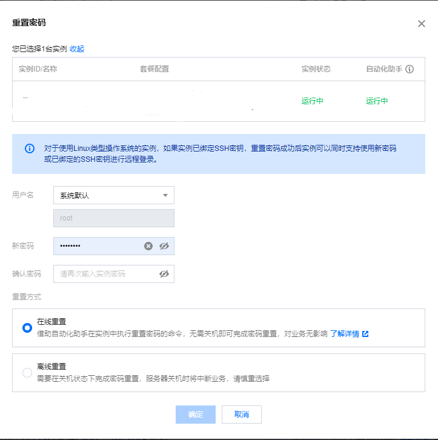

环境配置
本地环境
本地环境在第一篇Hexo+Gitee中有介绍，基本一摸一样的，还是安装git、Node.js和Hexo。
安装完Node.js后就可以使用shell指令安装Hexo了
1 | npm install -g hexo-cli |
安装完Hexo后，需要初始化一个Hexo文件夹，后面博客本地主要环境都在这个文件夹中。
1 | md blog |
npm下载很多时候需要管理员权限，当看到出现类似Permission Denied之类的报错时候，就考虑一下是不是没有权限。可以关掉终端，以管理员身份重新运行一下。
初始化后，需要安装插件：
1 | npm install hexo-deployer-git --save |
本地环境配置好后，可以在本地部署一下博客预览一下。
1 | hexo clean |
Hexo常用指令
1 | hexo clean |
生成ssh
打开git bash，运行命令：
1 | ssh-keygen -t rsa |
获得公钥
1 | cat ~/.ssh/id_rsa.pub |
服务器环境
服务器设置
重置密码

在服务器防火墙中添加HTTP规则和FTP规则
Nginx配置
- 安装nginx依赖环境
1 | yum install gcc-c++ |
- 下载nginx安装包
1 | wget -c https://nginx.org/download/nginx-1.18.0.tar.gz |
下载完成后，解压到/usr/local目录下，安装nginx
1 | tar -zxvf nginx-1.18.0.tar.gz -C /usr/local |
- –prefix 指定安装路径
- –with-http_stub_status_module 允许查看nginx状态的模块
- –with-http_ssl_module 支持https的模块
编译安装nginx
1 | make |
- 设置外部端口访问
进入nginx安装目录，开放80端口供外部访问。
1 | cd /usr/local/soft/nginx |
- 启动nginx
1 | cd /usr/local/soft/nginx |
没有消息代表启动成功，此时输入公网IP就可以进入nginx的欢迎界面了。
nginx指令
1 | cd /usr/lcoal/soft/nginx |
Git配置
- 安装git
1 | yum install git |
- 创建git用户
1 | adduser git |
- 添加git账户权限
注意，以下步骤在root用户权限下完成
修改sudoers文件
1 | chmod 740 /etc/sudoers |
在下面这个的地方添加git的权限
然后改回sudoers的权限
1 | chmod 400 /etc/sudoers |
- 设置git账户密码
1 | sudo passwd git |
- 切换至git账户，创建~/.ssh/authorized_keys
1 | su git |
将本地环境下的公钥拷贝到服务器的authorized_keys文件中，退出保存。
然后赋予authorized_keys权限
1 | chmod 600 /home/git/.ssh/authorized_keys |
在本地Git终端下测试能否登录git账户
1 | ssh -v git@公网ip |
创建仓库目录及相关配置
- 在root账户下创建目录
1 | su |
- 赋予权限
1 | chown -R git:git /var/repo |
- 用git初始化仓库，
1 | cd /var/repo |
创建一个新的git钩子，用于自动部署
在/var/repo/hexo.git下，有一个自动生成的hooks文件夹，我们需要新建一个钩子文件post-receive
1
vim /var/repo/hexo.git/hooks/post-receive
加入：
1
2
git --work-tree=/var/hexo --git-dir=/var/repo/hexo.git checkout -f修改权限：
1
2chown -R git:git /var/repo/hexo.git/hooks/post-receive
chmod +x /var/repo/hexo.git/hooks/post-receive修改nginx配置
进入nginx配置文件目录:
1
2
3cd /usr/local/soft/nginx
cd conf
vim nginx.conf修改配置文件：
主要修改user、server_name和location的根目录（root）
serer_name为你自己的域名，如果没有可以先填公网ip。
修改后，重启nginx。
cd /usr/local/soft/nginx/sbin
./nginx -s reload
部署博客
环境配置完成后，在本地hexo目录里修改站点配置文件_config.yml，找到deploy
1 | deploy: |
在本地电脑的hexo目录右键打开git bash
1 | hexo clean |
这时如果出现权限问题导致部署失败，在服务器端运行：
1 | chown -R git:git /var/repo/ |
部署成功后，就可以通过公网或者域名访问博客了。